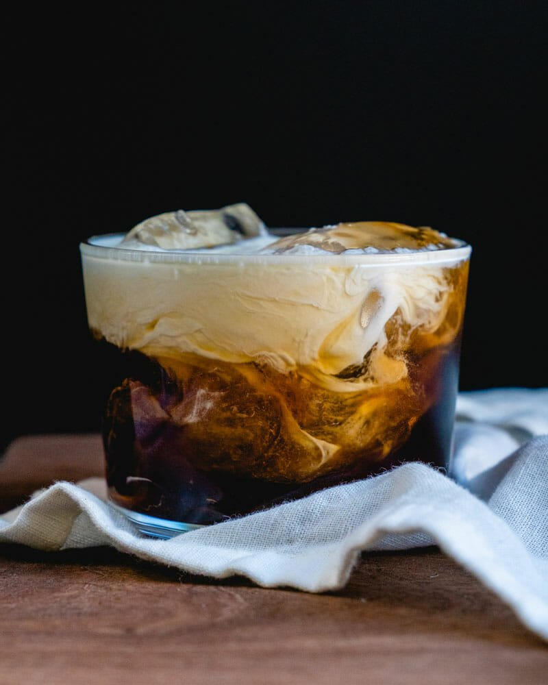

White Russian

Description
A cocktail made from vodka, heavy cream, and coffee liqueur.
Ingredients
- 2 ounces vodka
- 1 ounce coffee liqueur
- 1 ounce heavy cream
- 4 cubes clear ice
Steps
- Add vodka and coffee liqueur to a glass.
- Add ice and heavy cream.
- Stir gently and serve.